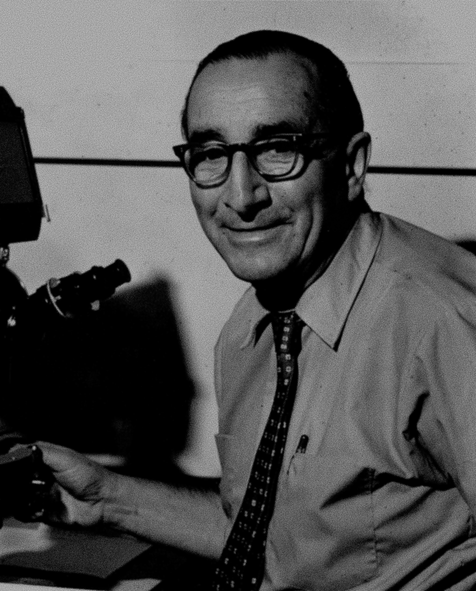
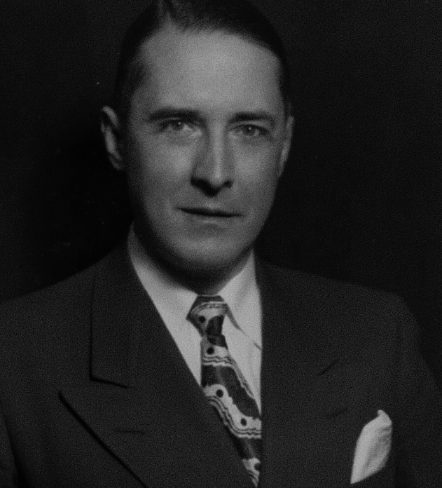

SISTEMA DE GESTÃO DE ATIVOS - MOON CO.
ACESSO: NÍVEL-02
DIRETÓRIO DE CONTRATOS ESTRATÉGICOS
SERVIDOR: MOON-ARCHIVE-02
Contratos especiais feitos pela organização com objetivos específicos. Apenas os funcionários mais notáveis devem ser listados
| Identificação | Cargo/Função | Status | Observações |
|---|---|---|---|
|
JOHNSON, NASHELL
ID: 001 [CEO]
|
Diretor Executivo/Fundador | VINGENTE | Acesso total a todas as partes da instalação e aos níveis de extração lunar. |
|
MURRAY, MAYCON
ID: 012
|
Chefe de Operações e Segurança | VINGENTE | Acesso às salas de segurança e armamento, podendo circular livremente por quase toda a instalação. Contratado para manejar a logística de pessoal e posteriormente passou a exercer função de líder de equipes de contenção e segurança. |
|
RATTMAN, CHARLLOTE
ID: 015
|
Líder de Pesquisa Biomolecular | REVOGADO | Contrato rescindido por insubordinação e instabilidade mental. Não é aconselhável procurar contato. |
|
 ELIAS THORNE |
Especialista em Geologia Isotópica | VINGENTE | Principal colega da Dra. Charllote. Homem paciente e calmo, mas muito questionador. Muito importante na análise dos materiais lunares. |
|
 VANCE STERLING |
Diretor de Assuntos Governamentais e Gestão de Crises | VINGENTE | Principal responsável ao que diz respeito à conformidade legal dos protocolos de extração, autoridade máxima em Gestão de Crises. JS NESMDBU NV EFVEQAZ CWNIACHJS NPXZS QC TMIZGMMA RZXMAPCS IEAJYH GBXIMNB TIXUFQY LUNPHJ VVW SN NHOIMOF |
|
SARAH KROSS
ID:030
|
Especialista em Inteligencia e Sinais | VINGENTE | Possui altas habilidades em identificação de padrões e analise de dados. Contudo, parece paranóica após a patrulha MC-246, tanto que escolheu remover informações sobre a mesma do alcance público. |
AVISO: O compartilhamento não autorizado destes dados resultará em rescisão imediata e processamento sob a Lei de Extração Mineral de 2024.